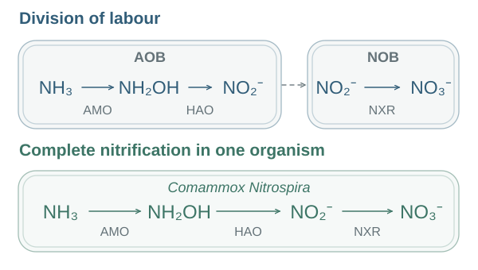
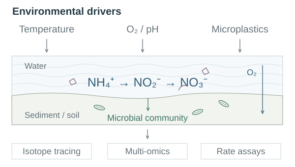
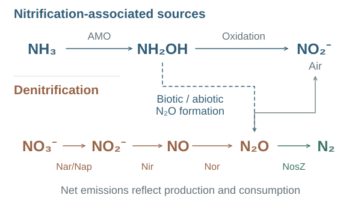
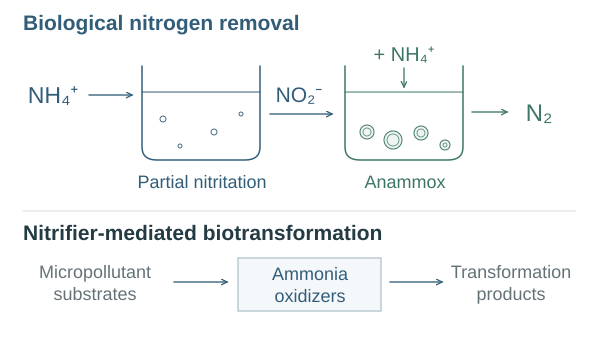

Research
We investigate microbial nitrogen transformations in natural and engineered environments, connecting fundamental microbiology with questions in climate, water quality, and resource recovery.
Microbial ecology and physiology
Who transforms nitrogen, and how?
Discovery and characterization of nitrogen-cycling microorganisms and their metabolisms in marine, coastal, soil, Antarctic, and engineered environments.


Selected publications
- Unveiling unique microbial nitrogen cycling and nitrification driver in coastal Antarctica
Han, P. et al. (2024)
Nature Communications, 15, 3143. - Complete nitrification by Nitrospira bacteria
Daims, H. et al. (2015)
Nature, 528, 504–509. - Abundance, diversity and physiological preferences of comammox Nitrospira in urban groundwater
Tang, X. et al. (2023)
Science of the Total Environment, 904, 167333.
Nitrogen cycling under environmental change
How do microbes respond to a changing environment?
Understanding how climate change, microplastics, and emerging contaminants influence nitrification, nitrous oxide production, and nitrogen fluxes.


Selected publications
- Hypoxia and acidification antagonistically suppress nitrification but enhance its N₂O production in coastal waters
Zhou, J. et al. (2026)
Science Advances, 12, eaef4314. - Nitrification Couples Microbial CO₂ Fixation to Warming and Drought Responses in Alpine Grassland Soils
Su, Y. et al. (2026)
Environmental Science & Technology, 60, 20304–20318. - Microplastics promote N₂O emissions by enhancing nitrification via ammonia-oxidizing bacteria in estuarine and coastal sediments
Tang, X., Bao, Y. et al. (2026)
Water Research, 293, 125458.
Microbial controls on greenhouse gas emissions
What determines whether nitrogen becomes N₂O?
Investigating the processes that regulate nitrous oxide production during microbial nitrogen transformations.


Selected publications
- Nitrous oxide sources, mechanisms and mitigation
Zhu, G. et al. (2025)
Nature Reviews Earth & Environment, 6, 574–592. - N₂O and NOᵧ production by the comammox bacterium Nitrospira inopinata in comparison with canonical ammonia oxidizers
Han, P. et al. (2021)
Water Research, 190, 116728. - Hypoxia and acidification antagonistically suppress nitrification but enhance its N₂O production in coastal waters
Zhou, J. et al. (2026)
Science Advances, 12, eaef4314.
Bioremediation and wastewater treatment
How can microbial metabolism improve water treatment?
Exploring nitrifying and anammox microorganisms for nitrogen removal, pollutant transformation, and sustainable wastewater treatment.


Selected publications
- Benzimidazole fungicide biotransformation by comammox Nitrospira bacteria: Transformation pathways and associated proteomic responses
Han, P. et al. (2023)
Journal of Hazardous Materials, 445, 130558. - Biotransformation of lincomycin and fluoroquinolone antibiotics by the ammonia oxidizers AOA, AOB and comammox: A comparison of removal, pathways, and mechanisms
Zhou, L.-J. et al. (2021)
Water Research, 196, 117003. - Cometabolic biotransformation and microbial-mediated abiotic transformation of sulfonamides by three ammonia oxidizers
Zhou, L.-J. et al. (2019)
Water Research, 159, 444–453.
The figures are conceptual schematics. Selected publications include work co-authored by Prof. Han, including research completed before HAN Lab at CityUHK. Visit Google Scholar for the full publication list.